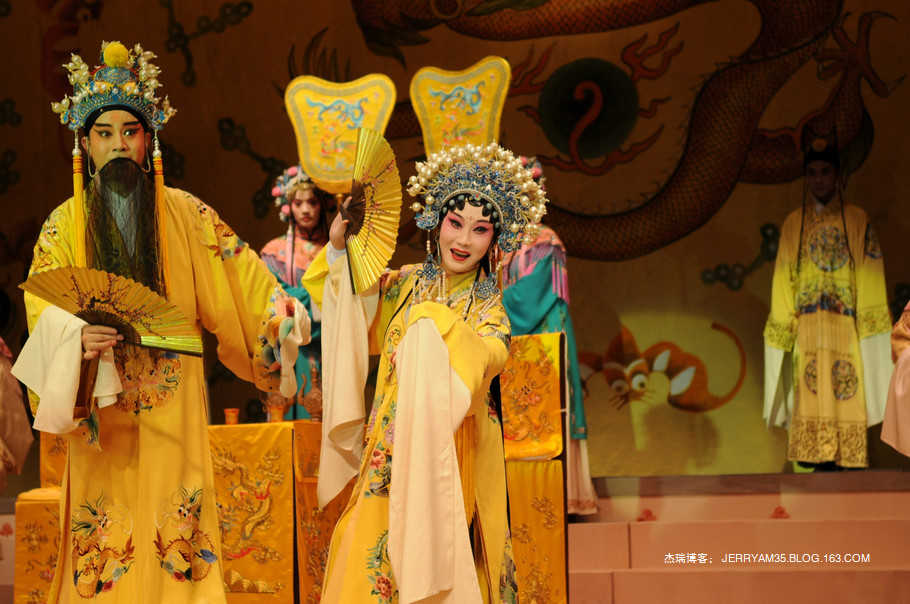
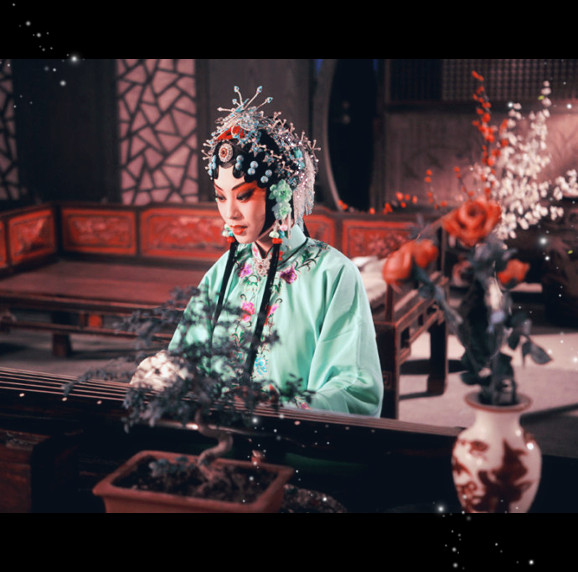
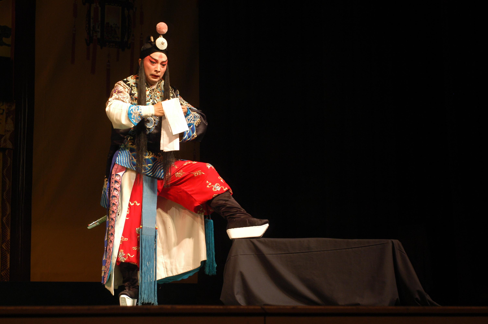
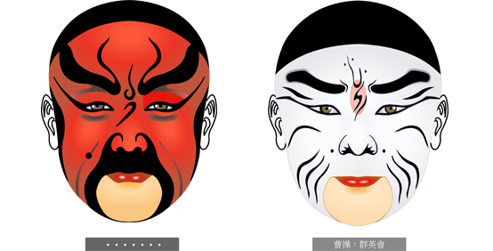
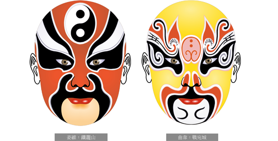

老生又称须生，正生，或胡子生。
老生主要扮演 中年以上的男性角色，唱和念白都用本嗓（真嗓）。
老生基本上都是戴三绺的黑胡子，术语称"黑三
小生扮演青年男性，分巾生（扇子生）、冠生（官生）、穷生、雉尾生（翎子生）、武小生等。
外，泛指生的副角，不表现确定的性格特征，唯汉剧的外唱、念、做并重。
武生，擅长武艺的人物，分长打武生和短打武生两类。
长打武生扎大刀、穿厚底靴，扮演大将。如京剧《长坂坡》中的赵云等
巾生，又称扇子生，因戴文生巾或持折扇而得名，
多扮儒雅潇洒的青年书生，唱、念、做诸功并重。如昆曲《柳荫记》中的梁山伯
冠生，是昆曲特有的行当，又分为大冠生、小冠生。
大冠生实为戴髯口的小生，多扮风流的皇帝或狂放不羁的才子，如《彩毫记·醉写》中的李白。
小冠生又称纱帽小生，多扮春风得意的年轻新贵，如《荆钗记》中的王十朋

穷生，即扮演穷愁潦倒的落魄书生，如川剧《彩楼记》中的吕蒙正、昆曲《绣襦记》中的郑元和。
雉尾生，又叫翎子生，因常在帽盔上插两根雉尾而得名，唱、念、做、打诸功并重。
如《群英会》中的周瑜、《连环记》中的吕布。
正旦俗称“青衣”，因所扮演的角色常穿青色褶子而得名。
主要扮演庄重的青年、中年妇女，表演特点是以唱功为主，动作幅度较小.行动比较稳重。
念韵白，唱功繁重。如《三击掌》中的王宝钏等。
花旦大多扮演青年女性。身着短衣裳，如褂子、裤子、裙子、袄,有时穿长衣裳，也绣着色彩艳丽的花样。
人物性格大都活泼开朗，动作敏捷伶俐。
表演以做功、说白为主，说白主要是京白，韵白较少。
刀马旦大都扮演擅长武艺的青壮年妇女，武打不如武旦激烈，不用“打出手”（即抛、掷、踢、接、武器的特技表演），较重唱、做和舞蹈。如《战金山》中的梁红玉、《穆柯寨》中的穆桂英等。
武旦扮演擅长武打、勇武的女性。表演上着重武打，特别是使用特技“打出手”。武旦穿短衣裳，重在武功，不重唱念。如《打焦赞》中的杨排风、《武松打店》中的孙二娘等。
花衫是本世纪20年代以后，综合青衣、花旦、刀马旦的艺术特点，发展而成的新的旦角类型。如《霸王别姬》中的虞姬、《汉明妃》中的王昭君、《锁麟囊》中的薛湘灵、《红楼二尤》中的尤三姐等。
老旦专门扮演老年妇女角色的行当。扮相、身段、台步都与青衣不同，主要突出老年人的特点。演唱用本噪，唱腔与老生接近，但具有女性婉转迂回的韵味。如《杨门女将》中的佘太君、《岳母刺字》中的岳母等
也称“大面”、“铜锤”或“黑头”，所表现的人物多为举止稳重者，以唱功见长，如《铡美案》中的包拯，《二进宫》中的徐延昭等

也称“二面”或“架子花”，多表现性格豪爽者，如张飞、李逵等，或奸邪佞幸者，如曹操、赵高等。
也称“武花脸”，多表现身具武艺者，以武打翻跌见长，如《挑华车》中的黑风利等。
指戏曲舞台上钟馗、周仓、巨灵神等类人物，他们或为天神，或为身体畸形者，造型夸张，多需垫肩、凸臀，在表演上以工架见长。
指那些不具武艺的滑稽人物，脸谱勾豆腐块，又根据其身份、地位、年龄等区分为方巾丑、褶子丑、袍带丑、鞋皮丑、老丑等。
指那些身具武艺的滑稽人物，又称“开口跳”，表演上以跌扑翻打为其特色，亦重念白表演。
即丑婆子，饰演那些或滑稽或凶恶的老妇人，如媒婆、店婆、禁婆等，多表演夸张、语言风趣。
凝重威武，整色为主，加重五官纹理加以实现。是十分古老的脸谱形式。
浅色为多，以为涂粉于面，不以真面目示人，突出奸诈坏人之性。
色彩绚丽，图案丰富，复杂美丽，五彩缤纷，有的还贴金敷银，华丽无比。

最原始的脸谱形式，利用双眉把脸分为额和面两个部分的脸谱。

把三块瓦脸的分界边缘艺术化，加上各式图案的脸谱.

象征忠义、耿直、有血性
其他：有讽刺意义，表示假好人。
表现正直，无私，刚直不阿的人物形象
表示阴阳中的阴，用于鬼魂
表现刚正，稳练，沉着的人物
其他：面色不好，丑陋。。
京剧脸谱起源于生活。
每个人面部器官的形状、轮廓相似，生理布局也都有一定的规律，面部肌肉的纹理与人物的年龄、生理、经历、生活的自然条件也都有密切关系，所以京剧脸谱的勾绘是以生活为依据，也是生活的概括。
美与丑的矛盾统一
与角色的性格关系的密切
其图案是程式化的
通过脸谱的造型和颜色、图案，开宗明义地告诉欣赏者这个人物的性格特征和道德伦理特征。
这样的划分使得舞台上的人物形象清楚明白，欣赏者不用再费心猜测、推理、判断。